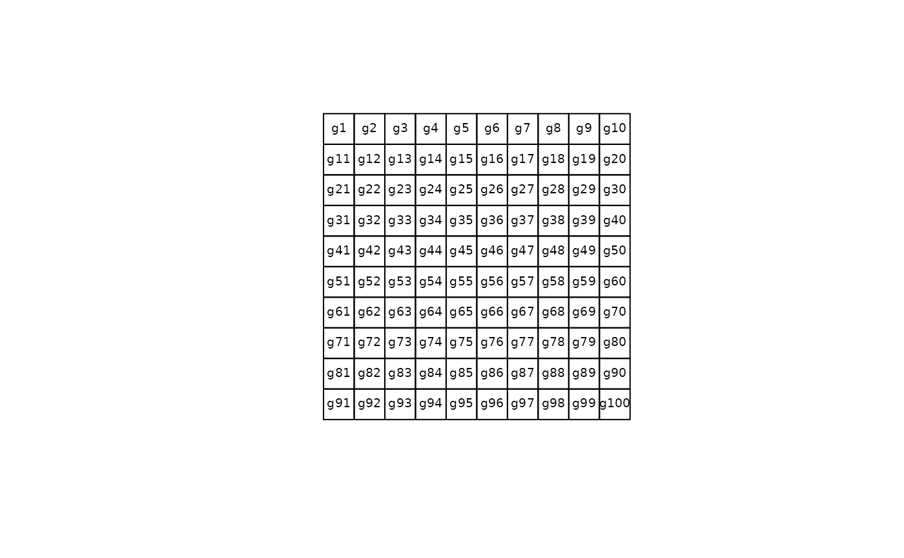

as.SpatialPolygons.PolygonsList.RdThis function is used in making SpatialPolygons objects from other formats.
as.SpatialPolygons.PolygonsList(Srl, proj4string=CRS(as.character(NA)))
<!-- %as.SpatialPolygons.Shapes(shapes, IDs, proj4string=CRS(as.character(NA))) -->
<!-- %as.SpatialPolygons.map(map, IDs, proj4string=CRS(as.character(NA))) -->
<!-- %as.SpatialPolygons.pal(arc, pal, IDs, dropPoly1=TRUE, proj4string=CRS(as.character(NA))) -->
The functions return a SpatialPolygons object
grd <- GridTopology(c(1,1), c(1,1), c(10,10))
polys <- as.SpatialPolygons.GridTopology(grd)
plot(polys)
text(coordinates(polys), labels=sapply(slot(polys, "polygons"), function(i) slot(i, "ID")), cex=0.6)
